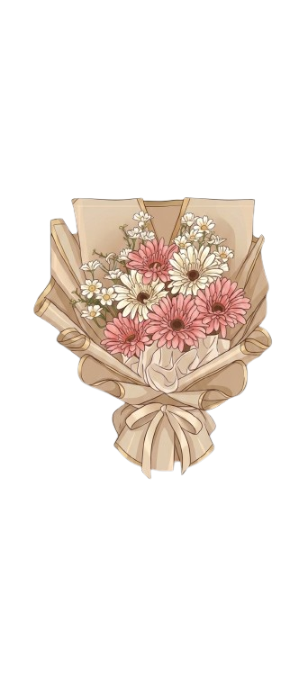

ini tentang kya... tentang aku...
dan tentang kenangan yang tersimpan...
untuk masuk,
ketik kata yang kusimpan untukmu.
— ketuk foto untuk membaca ceritanya —
"Satu babak telah abadi di tempat ini.
Terima kasih sudah melangkah sejauh ini bersamaku, Kya.
s̶e̶m̶o̶g̶a̶ ̶c̶e̶r̶i̶t̶a̶ ̶k̶i̶t̶a̶ ̶n̶g̶g̶a̶ ̶b̶e̶r̶a̶k̶h̶i̶r̶ ̶s̶a̶m̶p̶a̶i̶ ̶d̶i̶ ̶s̶i̶n̶i̶
d̶e̶n̶g̶a̶n̶ ̶c̶e̶r̶i̶t̶a̶-̶c̶e̶r̶i̶t̶a̶ ̶k̶i̶t̶a̶ ̶y̶a̶n̶g̶ ̶b̶a̶r̶u̶.̶.̶.̶
semoga kamu selalu bahagia dimana pun kamu berada"